THE NEXT GENERATION
From Gryffindor to Slytherin, Ravenclaw to Hufflepuff, the students of Hogwarts fill the ancient castle with life, rivalry, and magic. Whether competing on the Quidditch pitch, cramming in the library, or forming deep friendships, they carry the legacies of the founders.
CHARACTERS OF THE GROUP
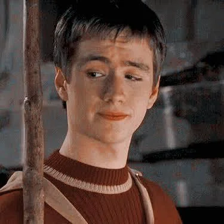
OLIVER WOOD
The Captain and Keeper of the Gryffindor Quidditch team. He was manically obsessed with Quidditch and tactical speeches.
DRACO MALFOY
Harry's arch-rival. A Slytherin with a pale face and white-blond hair. Raised to believe in pure-blood superiority, he eventually cracked under pressure.

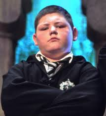
VINCENT CRABBE
One of Draco's sidekicks. Large and slow-witted, he acted as muscle. He was killed by his own Fiendfyre spell.
GREGORY GOYLE
The other half of Malfoy's bodyguard duo. Large, lumpish, and mean. He followed Malfoy's lead in bullying.
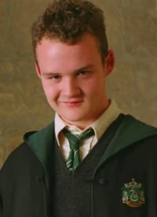
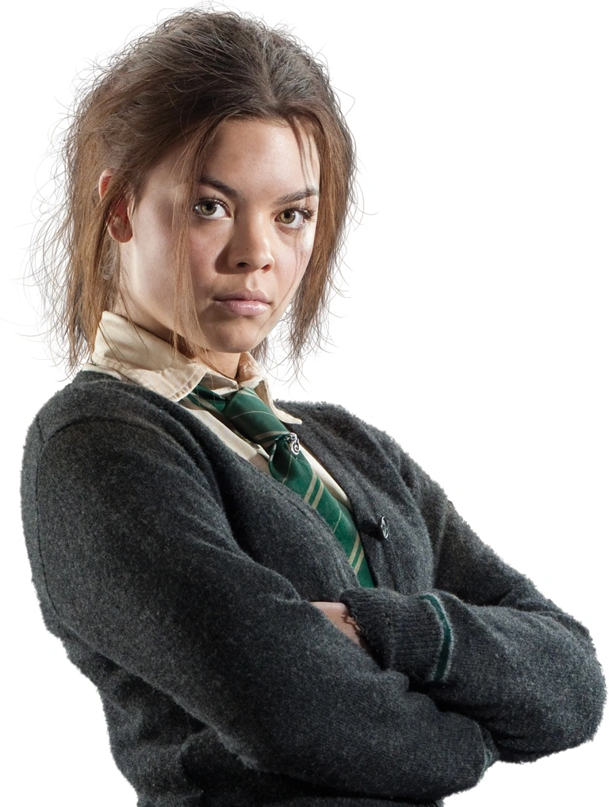
PANSY PARKINSON
A Slytherin girl described as "pug-faced." She was mean-spirited and attempted to hand Harry over to Voldemort.
CORMAC MCLAGGEN
A large, arrogant Gryffindor student. A talented Keeper but difficult to work with due to his ego.
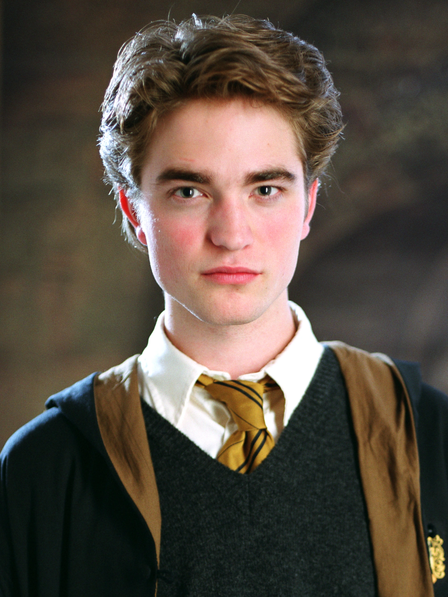
CEDRIC DIGGORY
Hufflepuff Captain and Hogwarts Champion. Handsome and fair. He was tragically murdered by Peter Pettigrew.
FLEUR DELACOUR
Beauxbatons Champion and part-Veela. She proved her courage and loyalty, marrying Bill Weasley.
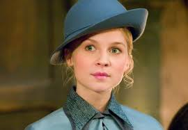
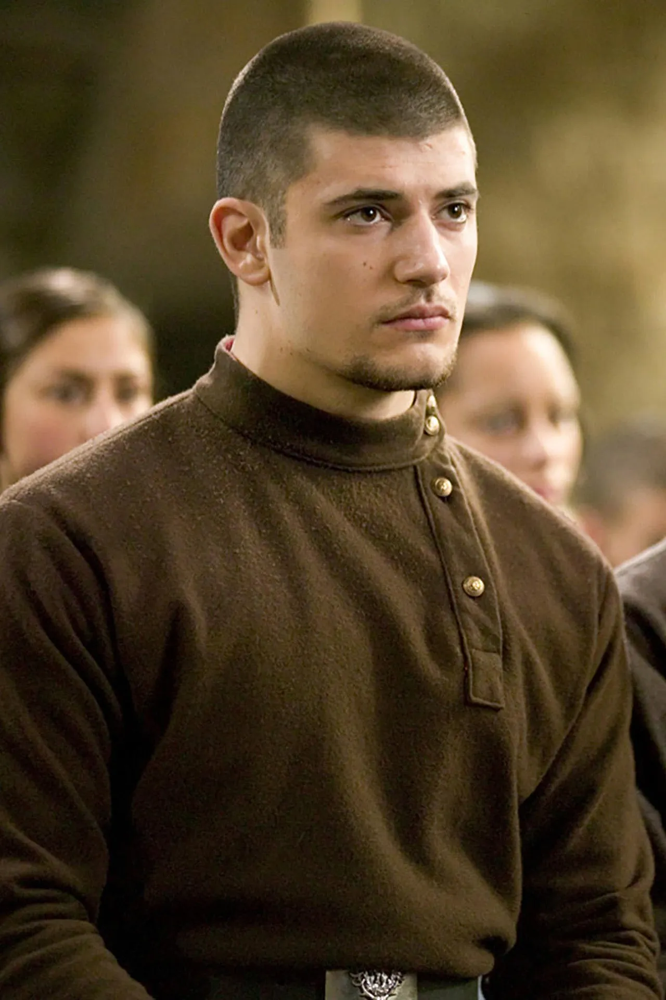
VIKTOR KRUM
Durmstrang Champion and international Quidditch star. Grumpy on land, graceful in the air.
ROMILDA VANE
Romilda Vane was a younger Gryffindor student. She was infatuated with Harry Potter. Romilda once attempted to use a love potion. She later matured over time.
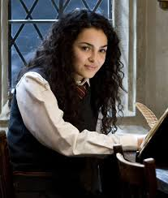

DEMELZA ROBINS
Demelza Robins was a talented Gryffindor Chaser. She joined the Quidditch team under Harry. Demelza was determined and athletic. She proved herself on the pitch.
JIMMY PEAKES
Jimmy Peakes was a Gryffindor Beater. He joined the team during Umbridge’s regime. Peakes showed solid flying skills. He supported Harry loyally.
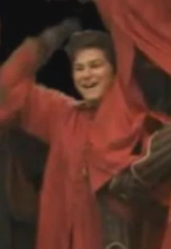
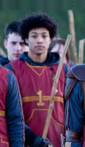
RITCHIE COOTE
Ritchie Coote was a Gryffindor Beater. He played alongside Jimmy Peakes. Coote was physically strong. He contributed to the team’s success.
BLAISE ZABINI
Blaise Zabini was intelligent and aloof. He kept emotional distance from others. Zabini avoided taking sides. He survived the war quietly.
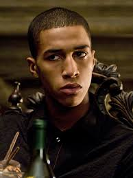
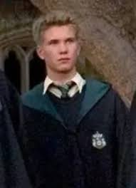
THEODORE NOTT
Theodore Nott was observant and intelligent. His father was a Death Eater. He remained mostly silent. He avoided attention.
MILLICENT BULSTRODE
Millicent Bulstrode was aggressive and strong. She supported Slytherin dominance. She once fought Hermione Granger. Intimidation was her strength.
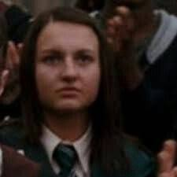
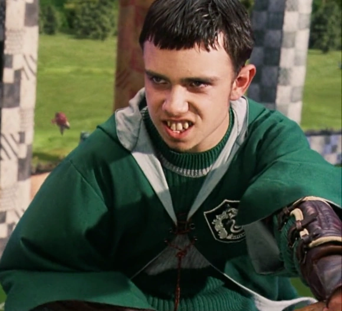
MARCUS FLINT
Marcus Flint was Slytherin’s Quidditch Captain. He believed in winning at any cost. Flint played dirty. Aggression defined his style.
ADRIAN PUCEY
Adrian Pucey was a Slytherin Chaser. He played aggressively. Pucey supported Flint’s tactics. He valued victory above all.
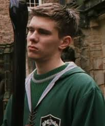
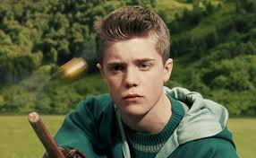
TERENCE HIGGS
Terence Higgs was an early Slytherin Seeker. He played before Draco Malfoy. Higgs was competitive. He represented house pride.
PENELOPE CLEARWATER
Penelope Clearwater was a Ravenclaw prefect. She dated Percy Weasley. She was petrified by the Basilisk. She later recovered fully.
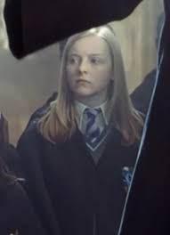
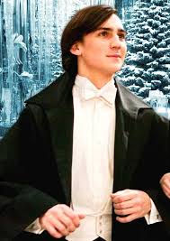
ROGER DAVIES
Roger Davies was a Ravenclaw student. He attended the Yule Ball. Davies was popular. He enjoyed Quidditch.
MARCUS BELBY
Marcus Belby was a Ravenclaw student. His uncle invented Wolfsbane Potion. He joined the Slug Club. He was intelligent but reserved.
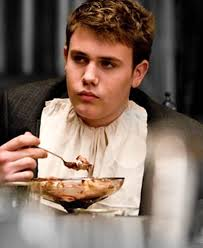
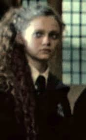
MARIETTA EDGECOMBE
Marietta Edgecombe betrayed the DA. She informed Umbridge. Hermione cursed the betrayal. She regretted her actions.
ZACHARIAS SMITH
Zacharias Smith was rude and skeptical. He doubted Harry’s claims. He joined the DA reluctantly. Cowardice marked his actions.
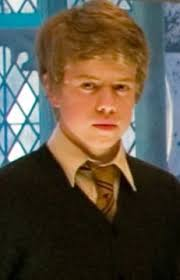
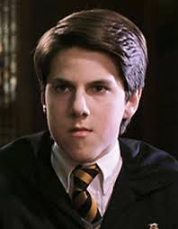
JUSTIN FINCH-FLETCHLEY
Justin Finch-Fletchley was Muggle-born. He was friendly and polite. Justin was petrified by the Basilisk. He joined the DA later.
WAYNE HOPKINS
Wayne Hopkins was a Hufflepuff student. He joined the DA. Wayne believed Harry’s story. He supported the resistance.
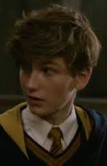
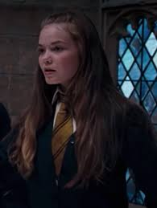
MEGAN JONES
Megan Jones was a Hufflepuff student. She joined the DA. Megan trained in defensive magic. She fought against Voldemort’s forces.